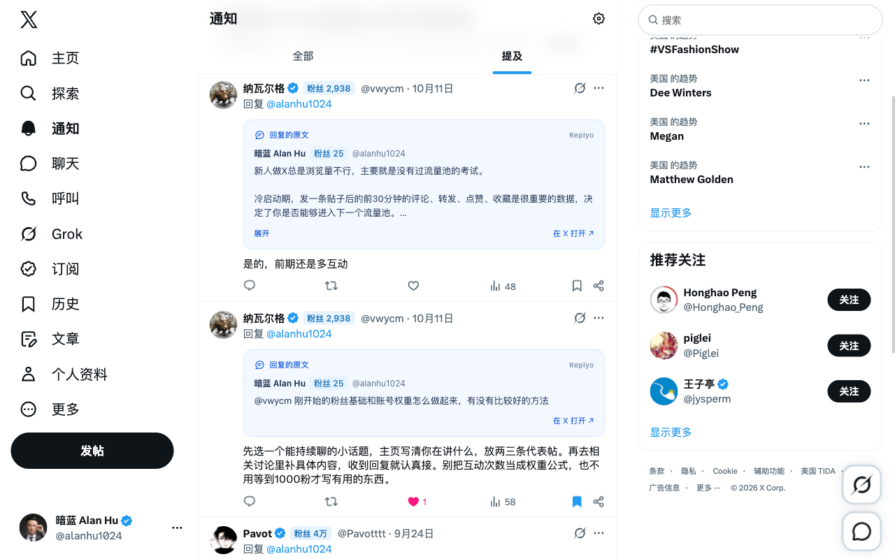

REPLYO 功能介绍
让交流更顺畅，
从这里了解 Replyo。
参与别人的讨论，回应自己收到的评论，也照顾那些值得继续的交流。按场景看看，Replyo 能帮你做些什么。
商店版 0.1.4 已提供原文预览与粉丝徽章。0.3.10 已撤回并整合为 0.3.14 重新提交，正在等待审核，已设置通过后自动发布。新版包含回复助手、多样候选、工作台、三个关注列表检查、手动回关定位、账号卡片及新图标。这些新功能尚未包含在公开下载中。状态核对于 2026 年 10 月 30 日。
查看版本进度 →想参与，
也能说出自己的想法。
打开 X 回复弹框，或进入帖子的评论回复页。无论是参与别人的讨论，还是回应自己收到的评论，Replyo 都能结合上下文和你的想法，帮你组织回复。
新版设计无需预选回复类型，最多提供四条带标签、角度和长短不同的候选。可以简短接话、补充信息、好奇一问，也能在合适的话题下轻松调侃。
- 在 AI 设置中连接自己的 DeepSeek API Key。
- 点击「生成候选」，挑选并修改喜欢的表达。
- 点击「填入 X 回复区」，检查后用 X 的按钮发布。
AI 用量由你的 DeepSeek 账户承担，发布始终由你决定。示意中的多样候选已整合至 0.3.14，等待审核，尚未包含在公开商店版中。
今天上线了第一个小工具。只有一个人用，但他回来打开了两次。
愿意回来用两次，已经是个很好的开始了。
他第二次回来是为了做什么？感觉这个问题值得聊聊。
用户只有一位，回头客已经有了。
通知一多，
也知道在接哪句话。
一句「是的」「我也遇到过」，脱离原文很难看懂。Replyo 在 X 通知中为支持的回复展示它直接回应的原帖，先看清话题，再接着聊。
- 启用 Replyo，打开 X「通知」。
- 查看「回复的原文」卡片；较长内容可以展开，也能跳转 X 查看。
- 原文缺失时按需加载，也可在插件中开启自动加载。
已删除或无权访问的内容无法恢复。加载缺失原文时，可能短暂打开后台 X 标签页。

看帖子时，
也了解一下对方。
浏览首页、通知和帖子详情时，作者昵称旁会显示可获取的公开粉丝数，支持的评论中也会展示。了解对方账号，不必逐个打开个人主页。
- 启用 Replyo，照常浏览 X。
- 在昵称后查看浅蓝色「粉丝」徽章。
- 鼠标移到缩写数字上，可以查看完整人数。
人数来自 X 已加载的信息；取不到时不会编造数字。粉丝数会变化，也不代表交流质量。
账号卡片 · 0.3.14 待审：点击徽章可查看可用的粉丝总数、关注总数及与当前登录账号之间的明确关注关系；缺失信息保持待确认。互关粉丝占比分析尚未接入，目前不可用。
最近一个有用的小习惯：先把问题写清楚，再去找工具。
这周哪一次交流，让你觉得特别有收获？
看清关注关系，
再决定要不要回关。
在自己的「正在关注」「关注者」或「认证关注者」页面开始检查。「正在关注」可筛选对方未回关的账号；另两个标签可筛选你尚未回关的账号。互相关注会明确标注，信息不足时保留待确认。
- 打开对应列表，点击「开始检查」。结果默认展开，也可以手动收起。
- 继续手动浏览 X 列表，再筛选已检查的未回关账号。
- 点击「去回关」，定位并突出显示对应的 X 关注按钮；该账号已不在页面中时，打开其个人主页。由你点击 X 原生按钮完成关注。
- 定位时，面板会悬浮在列表标签下方。确认页面中的对应关注状态已更新后，该账号会带着完成动画退出「我未回关」结果，方便继续查看下一个。
结果仅覆盖本次已检查的账号，认证关注者仅覆盖该标签，不代表完整名单。切换列表标签、离开列表、切换登录账号、停用 Replyo、刷新或关闭页面会清除结果。仅点击定位不会被判定为回关成功；插件不会替你关注或取关。
已检查 24 个账号
结果默认展开。「去回关」帮你找到 X 原生按钮，是否关注由你决定。
值得继续的对话，
留着慢慢聊。
把想继续回应的帖子和没写完的草稿留在本地工作台。标记「稍后」，下次带着上下文继续，不必重新找帖、重新组织语言。
- 打开 X 回复框，点击「Replyo · 回复助手」标题。
- 在工作台保存待办和草稿。
- 按「待处理 / 稍后 / 已处理」整理，准备好后回到 X 回复。
只保存你主动加入的对话，不是完整的 X 收件箱。对话与草稿在本机保留 30 天；「已处理」是你的标记，不代表已发送。
把账号的变化，
一点点记下来。
工作台里提供手动粉丝记录。填写日期与粉丝总数，之后可以对照最近的记录，看看账号在一段时间里的变化。
- 打开互动工作台，切换到「粉丝记录」。
- 填写日期和粉丝总数，保存记录。
- 至少两条记录后，查看与上一条记录的变化。
记录由你手动填写，保留 90 天。变化可能来自发帖、互动或其他曝光，不能归因于某条评论，也不承诺涨粉结果。
最近记录
| 日期 | 粉丝总数 | 较上次 |
|---|---|---|
| 10/29 | 328 | +3 |
| 10/28 | 325 | −1 |
| 10/27 | 326 | — |
记录变化，不把变化归因到某一条帖子或回复。
开始之前
几个常见问题。
所有功能都需要 AI Key 吗？
不需要。原文预览、粉丝徽章、关注关系检查、手动草稿和记录都不依赖 AI Key。只有支持 AI 的版本中，生成候选需要自己的 DeepSeek API Key 和可用余额。
Replyo 会自动发评论或关注别人吗？
不会。你挑选、修改回复，主动填入或复制后，再到 X 自己发布。关注关系检查也不会自动关注或取消关注。
我的内容保存在哪里？
上下文、已保存对话和记录在本地处理。主动选择 AI 生成时，所选文本与想法会直接发送给 DeepSeek。Replyo 没有开发者运营的后台服务器，也没有外部使用统计。已发布版本的具体说明见隐私政策。
阅读隐私政策 →安装后为什么找不到某个功能？
这页同时介绍已上线功能与新版预览。公开版 0.1.4 尚未包含随 0.3.14 等待审核的新功能，请看每节的状态。不同功能只在对应的 X 页面出现，并需要先启用 Replyo。
查看版本进度 →从现在能用的功能开始。
安装商店版体验原文预览与粉丝徽章，也可以查看新功能的更新进度。